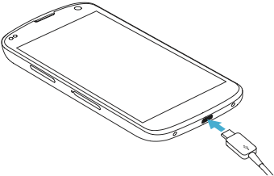

Connect your device to your computer using a micro USB cable.
Connect your device to your computer using a micro USB cable.
 If you don't have a login in, go to PhotosynQ first and sign up.
If you don't have a login in, go to PhotosynQ first and sign up.

Select an experiment from the dropdown box. If you want to participate, click on the select-button to see the measurement directions.
Answer all questions, prepare sample and device according to the directions and click start.